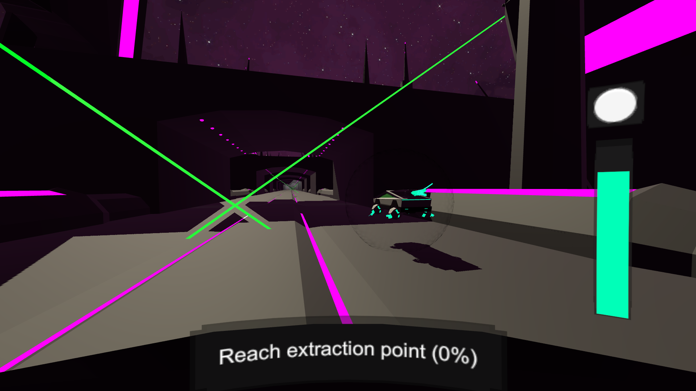
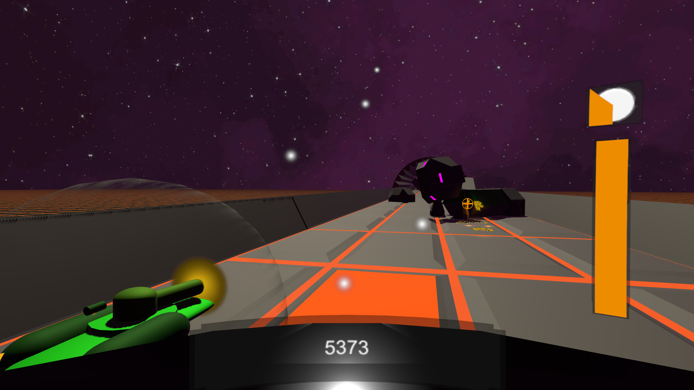
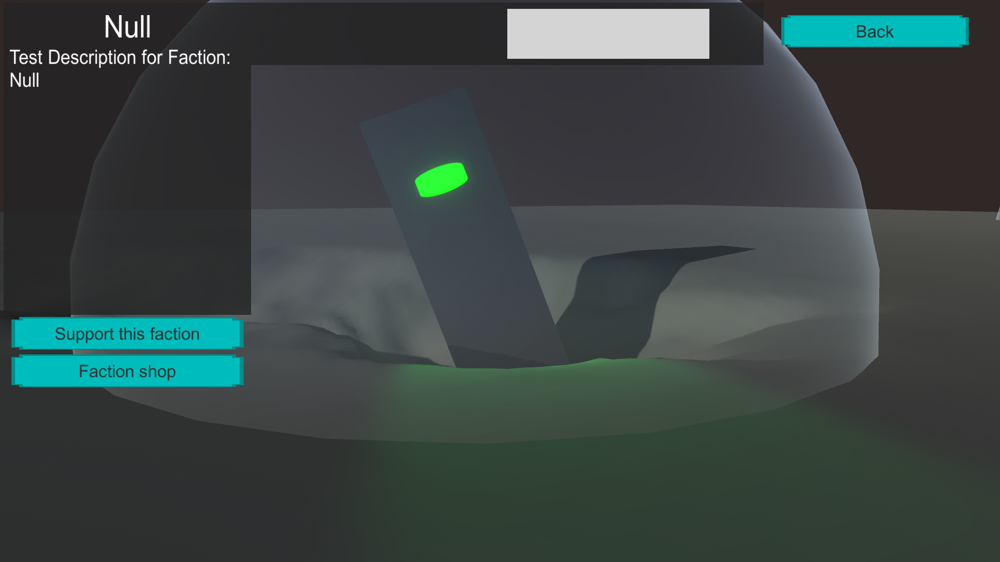
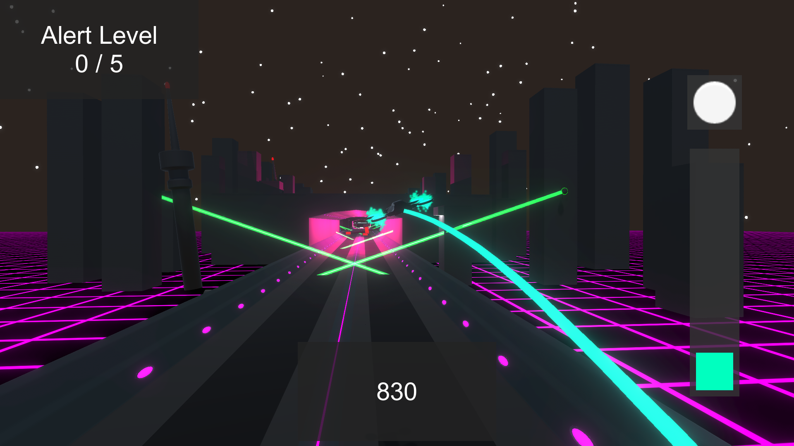

Frone
A retro-futuristic endless runner, the player needs to dodge obstacles and get as far as possible.
Project
Frone is probably my biggest project, with different areas, drone customisation, factions to support and more.
This game is still in development, there are still a lot of placeholder models.
Gameplay
The player can walk around in a first-person hub world, the hangar. The hangar is the base of operations, this is where the player can craft blueprints and materials, contact NPC factions, start missions and in a future update: place decorations.
There are a few mission types, patrol is probably the most basic mission type: the player needs to fly through the area and reach the end of the level.
There are different items in the game that can be picked up, some items are common and found in most areas of the game, while others can only be found in certain missions areas or as drops from certain enemies.
Drones and customisation

Players are able to collect different kinds of drones, different drone types have their own stats and abilities.
Factions and reputation
The game takes place during an alien invasion, There are different groups of survivors living in hiding. Each group has its own motives and goals, the player can choose to support these groups to gain access to their technology.
Enemies
The player encounters different kinds of enemies in the game, with some being more dangerous than the others, enemies will try to stop or slow down the player during missions. One of the common enemies in the game is the Airach which will wait for the right moment to ambush the player.